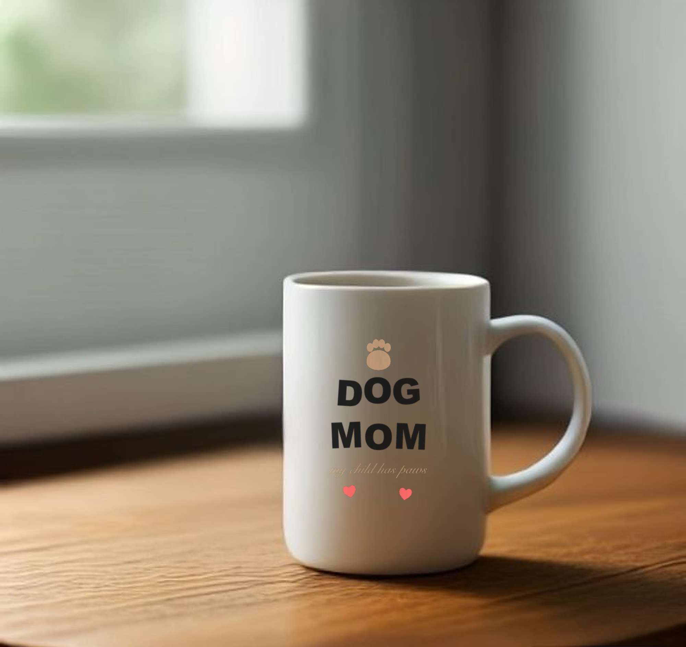

Cricut Keychains That Don't Fall Apart: 8 Projects That Actually Sell

You sold forty keychains at Saturday's market. On Tuesday a buyer messaged you a photo: the acrylic blank had snapped off at the hole, and the vinyl monogram was curled up like a dead leaf. You refunded her, then quietly pulled the rest of the batch off your table. Forty keychains, three evenings, and a pile of hardware that now lives in a drawer.
Keychains are the most profitable small project on a Cricut — cheap materials, fast cut time, and a price point people buy without thinking. They're also the project that fails most often, because almost everyone builds them the same way: vinyl stuck to a blank with glue, hung on a ring that acts like a pry bar in a pocket. Let's fix the build itself.
Why Most Cricut Keychains Break
Three failure points account for nearly every broken keychain you'll hear about.
- The hole, not the design. A key ring point-loads one small area thousands of times. Thin acrylic and unsealed wood crack there long before the design ever wears.
- The adhesive layer. Vinyl on a smooth blank is fine until something abrades it. Coins, keys and bag interiors do exactly that, and unsealed layers lift at the edges.
- The blank itself. Craft blanks vary wildly. Two-millimeter acrylic is a different animal from the 3mm your monogram was designed for, and cheap MDF will delaminate the first time it gets wet.
The fix isn't exotic. Match the blank to where the keychain will actually live, seal decorative layers under a dome or a laminate, and reinforce the hole.
Materials Compared
Per-piece costs are estimates for blanks bought in packs of ten or more.
| Blank | Cost (est.) | How you decorate it | Durability | Best for |
|---|---|---|---|---|
| Acrylic disc or blank | ~$0.40–1.20 | Vinyl on the face; two discs glued back to back | Good, but glue-up is the weak point | Monograms, teacher and team gifts |
| Faux leather / leatherette | ~$0.50–1.50 | HTV pressed on, some blanks take thread and rivets | Excellent — flexes instead of cracking | Personalized names, pet tags, key fobs |
| Wood or bamboo blanks | ~$0.60–2.00 | Adhesive vinyl, or a scored/etched look | Very good if sealed; splits if soaked | Rustic and gift-shop style keychains |
| Shrink plastic | ~$0.15–0.40 | Print-then-cut or marker, shrunk in the oven | Fair — thins out and dulls with UV | Party favors, kids' crafts, sample packs |
| Sublimation hardboard | ~$0.50–1.80 | Printed and heat-pressed, image under the coating | Very good — image is inside the surface | Photo keychains, full-color logos |
| Resin-domed blank | ~$0.80–2.50 | Vinyl or print sealed under resin | Best available; resin cures to a shell | Premium price point, gift sets |
Two of those are worth stocking as your defaults. Faux leather is the best value — it's cheap, it flexes, and HTV on leatherette looks expensive in a way vinyl on plastic never quite does. Acrylic sells better at markets because clear blanks catch light, but only if you reinforce the hole and glue two discs with a proper acrylic adhesive rather than a craft glue stick.
Hardware and Assembly
The blank matters less than what you hang it on. Split rings are the strongest option and what most buyers expect; lobster clasps and swivel hooks feel premium and cost more; ball chains are cheap and tangle constantly. A swivel hook costs a few cents more and keeps the piece hanging flat instead of twisting.
Reinforce the hole on acrylic and wood: drill oversized, then set an eyelet or grommet so the ring bears on metal instead of on plastic. On leatherette, punch a smaller hole than you think you need and press a rivet or eyelet through it — the material stretches, then relaxes around it. A little reinforcement costs about a nickel per keychain and eliminates your most common refund.
Cut Settings and Sizing
Keychains look best between 1.5 and 2.5 inches. Small designs need thicker lines: keep strokes at roughly 0.05 inch or wider, and use a bold or slab font instead of a thin script. Hairline details that survive on a shirt will vanish or tear on a two-inch tag. Set your blade for the material rather than guessing — leatherette settings are far lighter than vinyl, and cutting too deep dulls your blade fast. Keep a fine-point hook and reverse tweezers within reach for tight weeding.
What to Charge
At a market, keychains sell easily in the $6 to $12 range depending on material and personalization; resin-domed and leatherette pieces comfortably justify the top of that band. Bundling three for $20 moves units faster than a single keychain at a low price, because buyers feel like they're getting a set rather than an impulse buy. Online, marketplace fees hurt a four-dollar sale far more than a ten-dollar one, so fewer, better pieces beat a bin of dollar junk.
If you want designs already sized for small-cut legibility, there's a batch of tested small-format files in the SVG shop, and the free SVG library is the cheapest way to test a font at two inches before you cut ten of them.
8 Keychain Projects Worth Making
- Teacher name tags — leatherette with a first initial.
- Pet and owner pairs — one for the collar, one for the keys.
- Wedding date tags — acrylic with a clean serif date.
- Craft-fair logo tags — your own branding on the packaging.
- Gym and school mascot cuts — bold silhouettes that read at an inch.
- Key fob straps — long straps that clip into a bag handle.
- Baby-shower favors — shrink plastic in bulk for favors.
- Housewarming sets — a first-address tag paired with a free house SVG printed on the card.
FAQ
Q: What's the best glue for acrylic keychain blanks?
A: Use an adhesive made for plastic, not general craft glue — E6000 or a plastic-formulated cyanoacrylate both work. Roughen the disc edges lightly, then clamp the pair while it cures. Skip hot glue; it pops off in a warm car.
Q: Can I use regular vinyl on a keychain?
A: Yes, and it's how most acrylic keychains are made — but seal it or laminate it. Unprotected vinyl sits exactly where coins and keys scrape, so the edges lift within weeks. A clear laminate or a resin dome turns a fragile keychain into one that lasts years.
Q: Why do my keychains crack at the hole?
A: The ring is point-loading thin material. Drill a slightly larger hole, push the ring through an eyelet or grommet, and you've moved the stress onto metal. On acrylic, also avoid drilling too close to the edge — a quarter inch of material around the hole is the practical minimum.
Q: How long does a Cricut keychain take to make?
A: Design time is the real cost. Once a design is set, cutting and weeding takes a few minutes; a resin-domed piece adds an overnight cure. Batch twenty at a time and per-piece time collapses.
Q: How much should I charge for a keychain?
A: Estimate materials first — blank, hardware, vinyl or HTV, and packaging usually land between a dollar and three dollars. At a market, $6 to $12 is the working range, with bundles of three at around $20.
Make Them in Batches, Not One at a Time
Keychains pay off when you treat them like a production line: pick two blanks you trust, reinforce the hole, seal the decorative layer, and cut twenty instead of one. Sort them into bundles, and they sell as gifts and add-ons rather than as a bin of cheap impulse buys.
Grab a free small-format SVG and test it at two inches today, then build your market batch from designs in the SVG shop. If you're still choosing your cutting setup first, pull a free file and use it to dial in your settings on scrap.
🛒 Recommended Cricut Materials for This Project
- Permanent Adhesive Vinyl (Mugs, Signs, Tumblers): Oracal 651 Glossy & Matte Permanent Vinyl Multipack
- Heat Transfer Vinyl (T-Shirts & Tote Bags): Siser EasyWeed HTV Roll (Warm Peel, CPSIA Certified)
- Transfer Tape & Tools: HTVRONT Medium-Tack Clear Transfer Tape + XL Scraper
- Heavyweight Cardstock (Toppers & Keepsakes): 100lb Smooth Core Cardstock Variety Pack
Grab the Free 8-Design SVG Starter Pack + Cut Settings PDF
Want cut-ready files to practice this tutorial? Enter your email to unlock the Starter Pack ZIP immediately.
⬇️ Download Free Starter Pack (.ZIP)